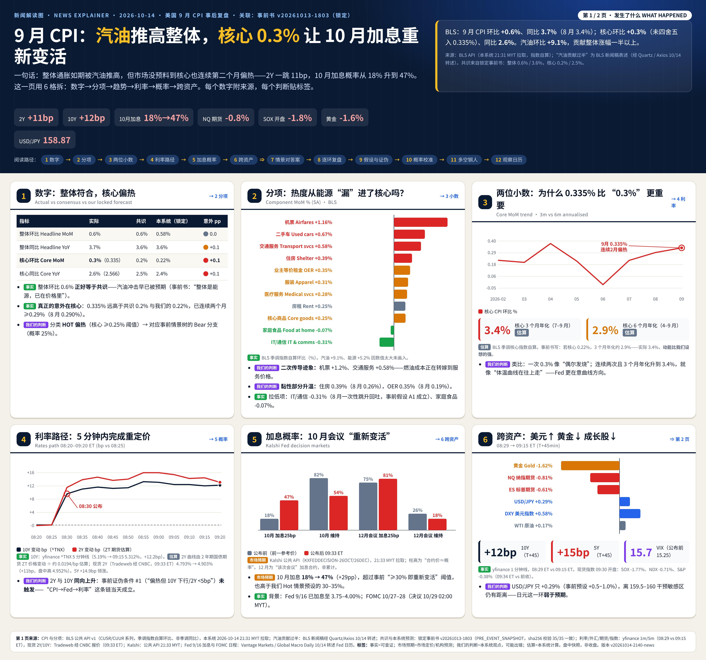

✅ 正式复盘（盘中版：市场数据截至 09:54 ET，收盘后复核）｜事前书（锁定）：v20261013-1803，快照 2026-10-13T18:03:00+08:00｜发布时间 2026-10-14 20:30 SGT｜数据来源：BLS API；市场 yfinance（交易日 2026-10-14）｜非投资建议
⏱ 30秒看懂
| 指标 | 实际 | 共识(事前锁定) | 本系统假设 | 意外 |
|---|---|---|---|---|
| headline_mom | 0.6% | 0.6% | 0.58% | +0.0pp |
| headline_yoy | 3.7% | 3.6% | 3.6% | +0.1pp |
| core_mom | 0.3% | 0.2% | 0.22% | +0.1pp |
| core_yoy | 2.6% | 2.5% | 2.4% | +0.1pp |
事前概率：偏冷 25% / 符合 50% / 偏热 25% → 结果：HOT 偏热
| 资产 | 最新 | 前收 | 变动 |
|---|---|---|---|
| 10Y | 5.29 | 5.22 | +7.4bp |
| S&P500 | 7,773.86 | 7,805.45 | -0.40% |
| NDX | 30,357.86 | 30,569.48 | -0.69% |
| SOX | 11,962.17 | 12,208.79 | -2.02% |
| USDJPY | 158.90 | 158.52 | +0.24% |
| VIX | 15.60 | 15.27 | +2.16% |
事前（锁定）：10Y 5.24%、2Y 4.75%、VIX 15.48、Kalshi 10 月加息 20% / 12 月 73%
Kalshi 事后（公开 API，抓取 2026-10-14 21:54 MYT，按最新成交价）： 10 月会议加息 44%（前一日 20%；事前锁定 20%）｜12 月会议加息 85%（事前 73% 的合约口径未在锁定快照中注明，可能与”单次会议”合约不可比）。
| 个股 | 敏感度(每+10bp) | 预测涨跌 | 实际涨跌 | 偏差 |
|---|---|---|---|---|
| CCL | -2.59% | -1.92% | -2.15% | -0.23pp |
| ARM | -2.56% | -1.89% | -3.98% | -2.09pp |
| SPCX | -2.56% | -1.89% | -2.05% | -0.16pp |
| MRVL | -1.84% | -1.36% | -3.49% | -2.13pp |
| RKLB | -1.77% | -1.31% | -1.95% | -0.64pp |
| INTC | -1.53% | -1.13% | -1.79% | -0.66pp |
| GLW | -1.49% | -1.10% | -1.75% | -0.65pp |
| KLAC | -1.21% | -0.90% | -1.20% | -0.31pp |
| CIEN | -1.18% | -0.87% | -3.73% | -2.85pp |
| QCOM | -1.16% | -0.86% | -1.61% | -0.75pp |
| AMD | -1.05% | -0.78% | -2.94% | -2.16pp |
| NDX | -0.67% | -0.50% | -0.69% | -0.20pp |
| SOX | -0.89% | -0.66% | -2.02% | -1.36pp |
怎么读：偏差大=当天有利率以外的驱动（行业新闻、个股消息）——事前已提示 R² 很低。
| 情景 | 事前概率(锁定) | 基础概率(过去36个月核心环比) | 差距 | 校准后 | 实际结果 |
|---|---|---|---|---|---|
| cool | 25% | 14% | +11pp | 22% | |
| inline | 50% | 33% | +17pp | 44% | |
| hot | 25% | 53% | -28pp | 34% | ✔ |
分档：偏冷 ≤0.15%、符合 0.15–0.25%、偏热 ≥0.25%（核心 CPI 环比，FRED CPILFESL）。Brier 分数（越低越好）：事前 0.875 vs 校准后 0.675 vs 纯基础概率 0.353。Excel「Calibration」页为实时公式。
| 数据 | 数值 | 来源 | 时间 |
|---|---|---|---|
| CPI 实际（核心/整体 环比、同比） | {‘headline_mom’: 0.6, ‘headline_yoy’: 3.7, ‘core_mom’: 0.3, ‘core_yoy’: 2.6} | BLS API（SA 算环比，NSA 算同比） | 2026-10-14 20:30 SGT |
| 共识 | 核心环比 0.2%、同比 2.5% | 事前书 v20261013-1803（锁定） | 2026-10-13T18:03:00+08:00 |
| 10Y 变动 | +7.4bp | yfinance ^TNX | 2026-10-14 盘中 09:54 ET |
| Kalshi 10 月加息 | 0.44 | Kalshi 公开 API KXFEDDECISION-26OCT | 2026-10-14 21:54 MYT |
| Kalshi 12 月会议加息 | 0.8500000000000001 | Kalshi 公开 API KXFEDDECISION-26DEC | 2026-10-14 21:54 MYT |
| 利率敏感度 | 13 只 | 事前书 §利率敏感度（过去一年回归，R² 低） | 2026-10-13T18:03:00+08:00 |
| 基础概率 | 偏冷/符合/偏热 14%/33%/53% | FRED CPILFESL 过去 36 个月 | 本次运行 |
| 个股/指数涨跌 | 17 项 | yfinance | 2026-10-14 |
| # | 假设 | 类型 | 检验/失效条件 |
|---|---|---|---|
| 1 | 偏热阈值：核心环比 ≥0.25% 或意外 ≥+0.1pp | ASSUMPTION | 若市场对 0.25% 无反应，阈值需上调 |
| 2 | 利率敏感度在事件日仍成立 | HYPOTHESIS | 偏差 MAE > 1.5pp 视为失效（Excel Sensitivity!MAE） |
| 3 | Kalshi 最新成交价≈市场概率 | ASSUMPTION | 成交稀薄/价差 >5c 时不可靠 |
| 4 | 36 个月基础概率代表当前通胀体制 | ASSUMPTION | 若体制切换（如连续加息周期），基础概率需重算 |
| 5 | 概率校准规则：差 >20pp 收缩 ≥50% | RULE (master prompt v2026-10-14) | 累计 Brier 若校准后更差则复核规则 |
⚠ 时间口径：本节市场数据为盘中快照（公布后约 45–65 分钟，09:15–09:35 ET），不是收盘。收盘复核在美股收盘后（10/15 04:00 MYT）进行。
| 环节 | 成立/断开 | 证据 | 学到什么 |
|---|---|---|---|
| ①CPI意外→美联储预期 | ✅ 成立 | 核心 0.335%（共识 0.2%）；Kalshi 10 月加息 18%→47%（+29pp） | 市场对”连续两个月偏热”的反应大于单月意外的线性外推 |
| ②→2年期 | ✅ 成立 | 2Y 4.793%→4.903%（+11bp，盘中高 4.952%；Tradeweb 经 CNBC 09:33 ET）；ZT 期货估算距公布前约 +14bp | 2Y = 市场对 Fed 路径的投票，≥+8bp 阈值明确触发 |
| ③→10年期 | ✅ 成立 | 10Y 08:29 5.19% → 09:15 5.312%（+12.2bp），与 2Y 同向；5Y +14.9bp 领涨 | 腹部（5Y）最敏感：市场重定价的是”未来 1–3 年加息路径” |
| ④→折现率/估值 | 🟠 部分 | 长久期股领跌（CRWD -4.4%、ARM -3.2%），但 AAPL +1.3% | 折现率上升并非均匀作用；资金在高久期与防御型大盘股之间轮动 |
| ⑤→个股 | 🟠 方向对、幅度散 | SOX 开盘 -1.77% ≈ 敏感度模型预测（约 −0.85%）的 2 倍；CRWV -11.7%（公布前已约 −4%，AI 债务叙事） | R² 低的模型只能给方向；个股消息（信用、业绩）会盖过利率 |
| 分项 | 9 月 | 8 月 |
|---|---|---|
| 汽油 Gasoline | +9.09% | +3.90% |
| 能源 Energy | +5.20% | +2.10% |
| 住房 Shelter | +0.39% | +0.26% |
| 业主等价租金 OER | +0.35% | +0.19% |
| 房租 Rent of primary residence | +0.25% | +0.17% |
| 核心服务 Services less energy svcs | +0.37% | +0.33% |
| 核心商品 Core goods | +0.25% | +0.11% |
| 二手车 Used cars | +0.67% | +0.36% |
| 服装 Apparel | +0.31% | +0.02% |
| 机票 Airline fares | +1.16% | +2.68% |
| 交通服务 Transportation services | +0.58% | +0.45% |
| 医疗服务 Medical care services | +0.28% | -0.25% |
| 车险 Motor vehicle insurance | +0.07% | -0.75% |
| 信息技术/无线 IT | -0.31% | -0.32% |
| 家庭食品 Food at home | -0.07% | +0.04% |
| 资产 | 公布前 08:29 | 09:15 | 变动 |
|---|---|---|---|
| 10Y (^TNX) | 5.190% | 5.312% | +12.2bp |
| 5Y (^FVX) | 4.980% | 5.129% | +14.9bp |
| 2Y 现货（Tradeweb/CNBC，vs 前收） | 4.793% | 4.903%（09:33） | +11bp |
| USD/JPY | 158.41 | 158.87 | +0.29% |
| DXY 美元指数 | 102.20 | 102.79 | +0.58% |
| NQ 纳指期货 | 30,840 | 30,589 | -0.81% |
| ES 标普期货 | 7,878.5 | 7,830.2 | -0.61% |
| 黄金期货 | 4,174.5 | 4,106.8 | -1.62% |
| WTI 原油 | 95.20 | 95.36 | +0.17% |
| VIX | 15.25 | 15.73 | +0.48 |
| SOX / NDX / S&P（09:34 ET vs 前收） | — | — | -1.77% / -0.71% / -0.38% |
| 合约 | 公布前参考价 | 公布后 | 变动 |
|---|---|---|---|
| 10 月会议 加息 25bp | 18% | 47% | +29pp |
| 10 月会议 维持 | 82% | 54% | -28pp |
| 12 月会议 加息 25bp | 75% | 81% | +6pp |
| 12 月会议 加息 >25bp | 3% | 6% | +3pp |
事前（锁定）为 Kalshi 10 月 20% / 12 月 73%。注意 12 月合约是”该次会议”的决定，不是累计概率。
| 资产 | 事前 Hot 情景 | 实际 | 判定 |
|---|---|---|---|
| 2Y | +8~+15bp | +11bp | ✅ 命中 |
| 10Y | +5~+10bp | +9.5bp vs 前收 / +12.2bp vs 公布前 | 🟠 上沿/略超 |
| USD/JPY | +0.5~+1.0% | +0.29% | 🔴 弱于预设 |
| NDX | −1.0~−2.0% | -0.71%（开盘）/ NQ -0.81% | 🟠 温和于预设 |
| SOX | −1.5~−3% | -1.77%（开盘） | ✅ 命中 |
| 10 月加息概率 | →30–35% | 47% | 🔴 超出预设 |
| 假设 / 证伪条件 | 结果 | 证据 |
|---|---|---|
| A1 8 月通信一次性项目回吐 | ✅ 成立 | IT/通信 -0.31% |
| A2 住房/OER 只小幅回升（证伪：OER ≥0.35%） | 🔴 被证伪 | OER 0.350%，住房 0.39% |
| A3 市场主要通过 2Y 反应 | ✅ 成立 | 2Y +11bp |
| A4 半导体主驱动不是 CPI | 🟠 待收盘 | 偏热 + SOX −1.8%：利率有贡献，但幅度约为模型 2 倍 |
| A5 偏热概率 25% | 🔴 概率校准误差 | 结果偏热；基础概率 53% |
| 证伪 #1 偏热但 10Y 下行/2Y <5bp | 未触发 | 2Y、10Y 同向大涨 → 传导映射当天有效 |
| 证伪 #4 整体 ≥0.7% 且核心 ≤0.2% | 不适用 | 整体 0.649%、核心 0.335% |
| 证伪 #5 核心落在 0.16–0.24 区间外 | 🔴 触发 | 0.335% → Fundamental Forecast 误差：二手车（+0.67%，我们预期下跌）与住房被低估 |
| 个股 | 变动 |
|---|---|
| CRWV | -11.66% |
| MXL | -5.28% |
| CRWD | -4.37% |
| COHR | -3.57% |
| ARM | -3.23% |
| CIEN | -3.21% |
| LITE | -3.09% |
| RKLB | -2.99% |
| MRVL | -2.92% |
| AMD | -2.74% |
| SIMO | -2.40% |
| SPCX | -2.24% |
| INTC | -2.21% |
| GLW | -2.13% |
| AMAT | -1.97% |
| CCL | -1.95% |
| AVGO | -1.90% |
| TSLA | -1.70% |
| PLTR | -1.62% |
| NVDA | -1.54% |
| QCOM | -1.48% |
| MU | -1.44% |
| KLAC | -1.25% |
| TSM | -1.23% |
| PWR | -0.83% |
| EME | -0.72% |
| ASML | -0.35% |
| AAPL | +1.31% |
读法：跌幅最大的 CRWV/MXL/CRWD/COHR/ARM/CIEN/LITE 中，CRWV 公布前已跌约 4%（AI 债务叙事），不能全部归因 CPI；AAPL 逆势上涨显示资金向防御型大盘股轮动；ASML 业绩超预期并上调 2026 指引，股价仍 -0.35%。

✅ 自我测验 Check your understanding
答案：①→②成立与否无关；说明利率由其他因素（供给/期限溢价/其他数据）驱动——环③独立于CPI。
答案：不一定：R² 低意味着单日噪声大；要看多次事件的平均偏差（基础概率）。